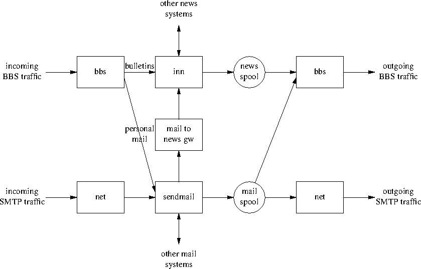

BBS Reference Manual
Version 960811
Dieter Deyke, DK5SG/N0PRA
deyke@fc.hp.com
Table of Contents
- Start
- Command Input
- Interrupting the Output
- Commands
- ALIAS
- DELETE
- DIR
- DISCONNECT
- GROUP
- HELP
- HEADERS
- INFO
- LIST
- MARK
- MAXAGE
- MYBBS
- PIPE
- PROMPT
- QUIT
- READ
- RELOAD
- REPLY
- SEND
- SHELL
- SUBSCRIBE
- UNMARK
- UNSUBSCRIBE
- VERSION
- WRITE
- Patterns
- Ranges
- S&F data flow
To start the BBS you must type 'bbs' after you have connected to the
system.
If your home directory contains the file '.bbsrc' it's contents will be
executed automatically. This allows the customization of the
PROMPT text, or the automatic execution of (for example)
ALIAS, SUBSCRIBE, or DIR commands.
A command consists of a command name and optional arguments. Commands
are not case sensitive, and may be abbreviated. If the command
arguments contain spaces, they must be enclosed in either single or
double quotes. The maximum length of a command line is 2000 characters,
and the maximum number of arguments is 250.
You can type more than one command on one line by separating the
commands with a ; (semicolon) character.
The output may be stopped by typing the 'interrupt' character. Normally
this character is defined to be DEL (ASCII character 127), however this
may be changed using the Unix command "stty intr" before starting the
BBS.
The ALIAS command shows or sets command aliases. After a command
line is scanned, it is parsed into distinct commands and the first word
of each command, left-to-right, is checked to see if it has an alias.
If it does, it is replaced by the text which is the alias for that
command. To detect looping, the number of alias substitutions on a
single line is restricted to 20.
To unset an alias make text the empty string (eg "").
The following aliases are compiled into the BBS but can be unset or
redefined:
| BYE | "QUIT"
|
| CHECK | "DIR"
|
| ERASE | "DELETE"
|
| EXIT | "QUIT"
|
| KILL | "DELETE"
|
| MAIL | "SHELL mailx"
|
| MORE | "PIPE more"
|
| NEWNEWS | "RELOAD; DIR"
|
| PRINT | "READ"
|
| RESPOND | "REPLY"
|
| SB | "SEND"
|
| SKIPGROUP | "MARK *; LIST"
|
| SP | "SEND"
|
| STATUS | "VERSION"
|
| TYPE | "READ"
|
| > | "WRITE"
|
| ? | "HELP"
|
| ! | "SHELL"
|
| | | "PIPE"
|
The DELETE command deletes the specified articles from the current
group. Only articles written by the user may be deleted. The
DELETE request will also be automatically forwarded to other BBS
systems. See also Ranges.
The DIR command with no arguments shows all subscribed-to groups
containing one or more unread articles. If DIR is followed by one
or more patterns it shows all groups matching those patterns, counting
all articles (read or unread). See also Patterns and the
SUBSCRIBE and UNSUBSCRIBE commands.
The DISCONNECT command ends the current BBS session, and then
tries to terminate the connection. If the BBS was started using a Unix
shell with job control (eg /bin/csh or /bin/ksh), DISCONNECT will
not be able to terminate the connection. In this case the user has to
enter 'exit' to the shell in order to disconnect.
The GROUP command shows or sets the current group.
The HELP command with no arguments prints a short list of all
possible BBS commands, HELP followed by command prints
help specific to that command, HELP ALL prints the complete BBS
manual.
The HEADERS command shows or sets the flags controlling the output
of article header lines by the READ, WRITE, and PIPE
commands. flags contains one character for each header line to be
output:
| B | Bulletin-ID:
|
| D | Date:
|
| E | Expires:
|
| F | From:
|
| L | Lifetime:
|
| M | Msg#:
|
| P | Path:
|
| R | R:
|
| S | Subject:
|
| T | To:
|
The default for flags is "DFS".
The INFO command prints the contents of the file
"/usr/local/lib/station.data", which may contain station information.
The LIST command with no arguments lists all unread articles in
the current group. If the current group does not contain any unread
articles, LIST will enter the next subscribed-to group containing
unread articles, make that the current group, and list all unread
articles in this new group. The LIST command followed by one or
more patterns shows all articles (read or unread) matching those
patterns. The patterns are matched against the Subject and From fields.
See also Patterns.
The MARK command marks the current or the specified articles in
the current group as being read. See also Ranges.
The MAXAGE command shows or sets the maximum age of unread
articles. Whenever a group is listed with the LIST command, all
articles older than maxage days are automatically marked as being
read. To disable this feature set maxage to some large number (eg
99999). The default for maxage is 7 (days).
The MYBBS command stores mailbox as the users home
mailbox. All incoming messages to this user will be
forwarded to this home mailbox. This MYBBS information will be
automatically transferred to other BBS systems.
The PIPE command with no range arguments pipes the next
unread article in the current group to unix-command. If the
current group does not contain any unread articles, PIPE will
enter the next subscribed-to group containing unread articles, make that
the current group, and pipe the first unread article in this new group.
The PIPE command followed by one or more ranges pipes the
specified articles in the current group. See also Ranges.
The PROMPT command shows or sets the text that the BBS transmits
to indicate that it is ready for more user input. If
prompt-string contains space characters, it must be enclosed in
either single or double quotes. The following special character
sequences are recognized:
| \c | current article number
|
| \d | current date
|
| \h | BBS hostname
|
| \n | newline character
|
| \t | current time
|
| \u | user name
|
| \w | current group
|
| \xxx | character with octal code xxx
|
| \\ | backslash character
|
The default prompt-string is "\w:\c > ".
The QUIT command exits the BBS program.
The READ command with no range arguments reads the next
unread article in the current group. If the current group does not
contain any unread articles, READ will enter the next
subscribed-to group containing unread articles, make that the current
group, and read the first unread article in this new group. The
READ command followed by one or more ranges reads the
specified articles in the current group. See also Ranges.
The RELOAD command checks for new groups and articles.
The REPLY command sends a response to the current or the specified
article in the current group. If ALL is used, the response will
be delivered to all recipients of the original message, otherwise it
will be sent to the author only.
The SEND command sends a personal mail to
recipient@mailbox, or posts an article to group with
distribution distribution. Mail messages and articles are
forwarded to other BBS systems if necessary. Terminate message entry
with a line containing just ^Z (control Z), /EX, or ***END.
The SHELL command starts a Unix shell process. If a Unix command
is specified with the shell command, only this command will be executed,
and the BBS will be re-started when the command has completed. If the
Unix command contain spaces, it must be enclosed in either single or
double quotes.
The SUBSCRIBE command with no arguments subscribes to the current
group. If SUBSCRIBE is followed by one or more patterns it
subscribes to all groups matching those patterns. See also
Patterns.
The UNMARK command marks the current or the specified articles in
the current group as NOT being read. See also Ranges.
The UNSUBSCRIBE command with no arguments unsubscribes from the
current group. If UNSUBSCRIBE is followed by one or more patterns
it unsubscribes from all groups matching those patterns. See also
Patterns.
The VERSION command shows the current BBS version number, and some
status information.
The WRITE command with no range arguments writes (appends)
the next unread article in the current group to filename. If the
current group does not contain any unread articles, WRITE will
enter the next subscribed-to group containing unread articles, make that
the current group, and write the first unread article in this new group.
The WRITE command followed by one or more ranges writes the
specified articles in the current group. See also Ranges.
Some BBS commands take patterns as arguments. The syntax of patterns is:
| * | Matches any string, including the null string.
|
| ? | Matches any single character.
|
| [...] | Matches any one of the enclosed characters.
|
| | A pair of characters separated by - matches any
|
| | character lexically between the pair, inclusive.
|
| | The NOT operator ! can be specified immediately
|
| | following the left bracket to match any single
|
| | character not enclosed in the brackets.
|
| \ | Removes any special meaning of the following character.
|
| | Any other character matches itself.
|
All pattern matches are case insensitive.
Some BBS commands take ranges as arguments. The syntax of ranges is:
| * | All articles.
|
| - | All articles.
|
| number | The article numbered number.
|
| number- | All articles from number to the highest possible number.
|
| -number | All articles from the lowest possible number to number.
|
| number-number | All articles from the number to number.
|
